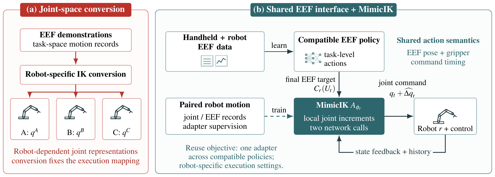
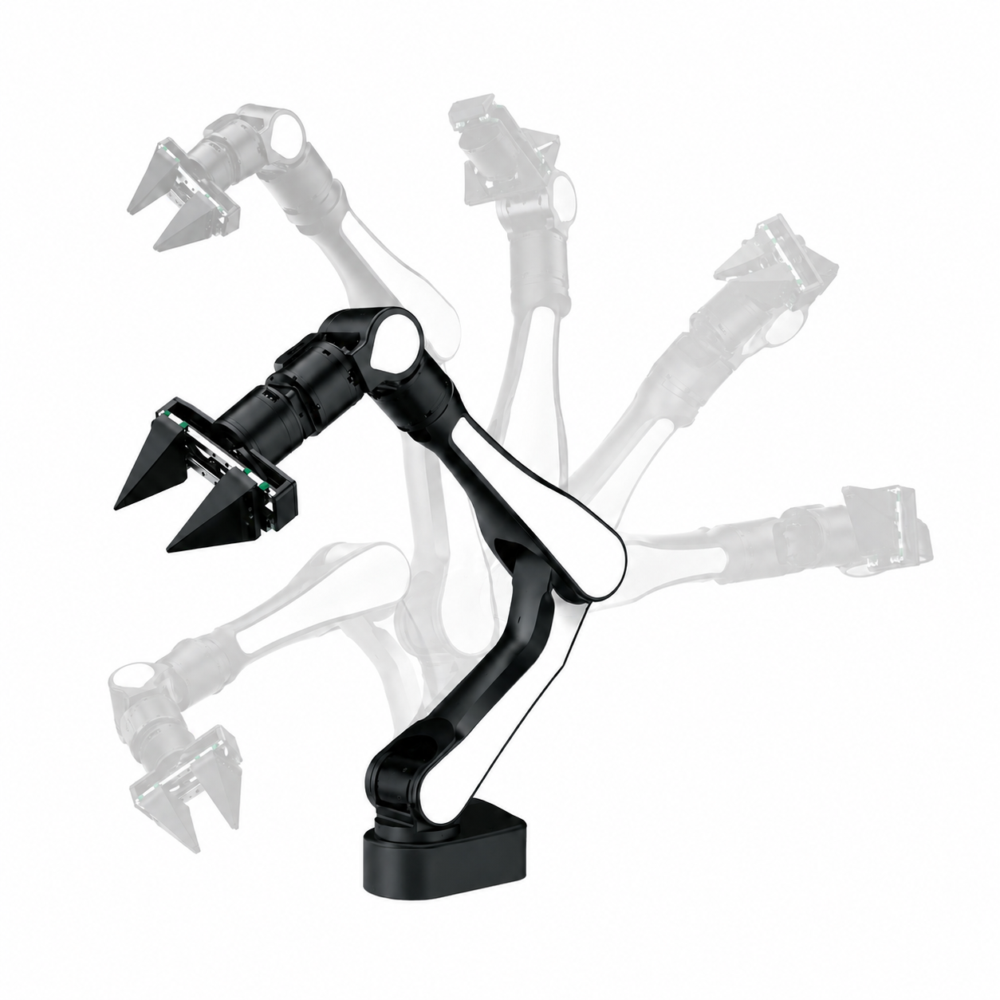
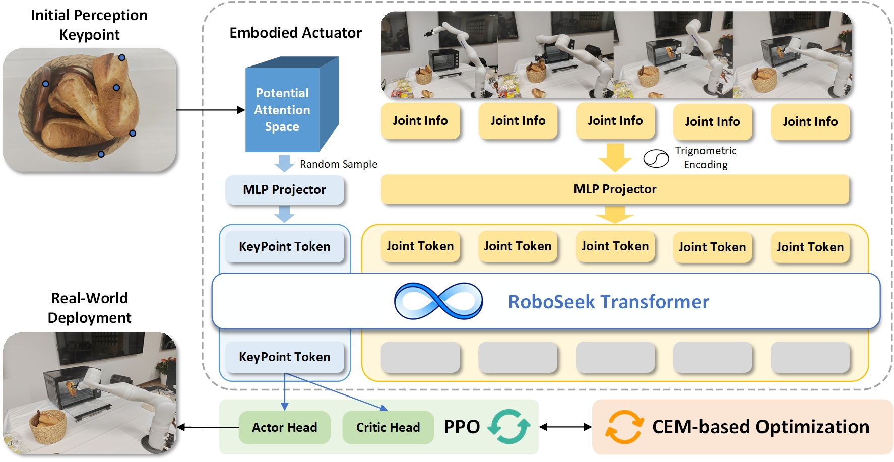
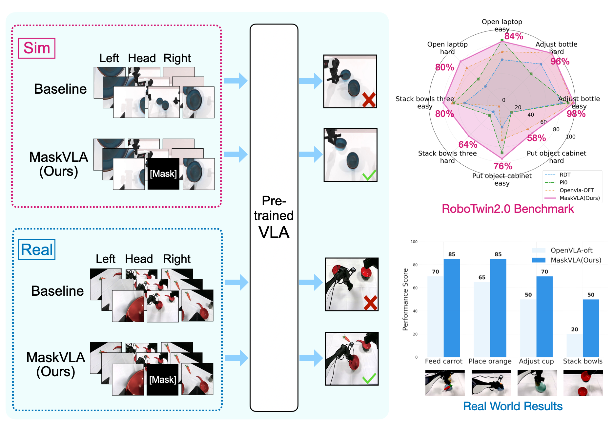
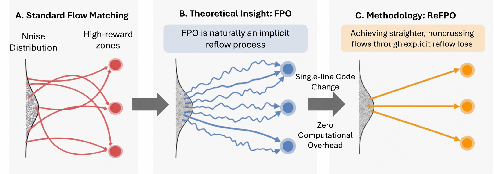

arXiv 2026
MimicIK: Real-Time Generative Inverse Kinematics from Teleoperation with FK Consistency

Learning continuous joint-space motion from teleoperation with flow matching and differentiable kinematics.
ROBOT LEARNING · EMBODIED AI
I am an incoming PhD student in Computer and Information Engineering at The Chinese University of Hong Kong, Shenzhen. I currently work on robot learning as a research assistant at the Future Network of Intelligence Institute (FNii) in Shenzhen and an algorithm engineer at Ising AI.
My research focuses on embodied AI, generative robot policies, and real-world manipulation. I am interested in how robots learn from demonstrations, reason about their environment, and turn model predictions into reliable physical actions.
Previously, I worked at AgiBot on humanoid systems and teleoperation. I received my MSc in Mechatronics and Robotics from the University of Glasgow, where I was supervised by Professor David Flynn and Dr Ian Watson. I hold a BEng in Mechanical Design, Manufacturing and Automation from Heilongjiang University.

MimicIK Real-world robot learning
RESEARCH
arXiv 2026

Learning continuous joint-space motion from teleoperation with flow matching and differentiable kinematics.
arXiv 2025

IROS 2026

Visual masking for more generalizable vision-language-action policies.
NeurIPS 2026 · Poster

Reflow regularization for stable reinforcement learning with flow-based control policies.
arXiv 2026
arXiv 2026
arXiv 2026
arXiv 2026
RESEARCH & ENGINEERING
Algorithm Engineer · Founding Team Member
VLA training and real-robot deployment; data collection pipelines across AIRBOT, OpenArm and Tianji platforms. Joint development with Qiyuechu Technology on home robotics and team building.
Research Assistant · VLA Group
Robot learning experiments, teleoperation data collection, policy fine-tuning and embedded deployment.
Algorithm Software Engineer / Product Engineer
Humanoid software, teleoperation mapping, robot SDKs and system integration on A2 and X1/X2 platforms.
GET IN TOUCH
I welcome conversations about robot learning, embodied intelligence, and bringing research onto real hardware.
Geoyang689@outlook.com